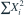

独立样本来自形状 α 未知、速率 β 已知的 Gamma 分布。以下哪个是 α 的充分统计量？
- A

- B
- C
- D
我已思考，展开答案与解析
正确答案：C
- 似然中与 α 和样本共同有关的因子为 。由因子分解定理，所给对数和充分。
易错提醒先明确分布参数、独立性和统计量的定义，再进行计算。
用户提供练手卷 · 原第 48 题；题目 PDF 第 8 页
单选改编；题干与选项已重新编排

用户提供练手卷 · 原第 48 题；题目 PDF 第 8 页
单选改编；题干与选项已重新编排